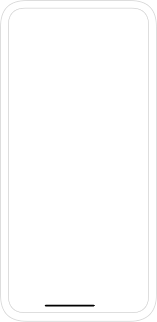

<div class="iphone-view">
  <div class="ipad-view-default-content">
    <div class="width-100">
      <div class="main-carosuel-iphone">
        <div class="dis-flex m-b-10">
          <div class="width-20 status-bar-left">9:41</div>
          <!--  -->
          <div class="width-30 iphone-status-bar-right">
            <mat-icon class="status-bar-icons">signal_cellular_alt</mat-icon>
            <mat-icon class="status-bar-icons">wifi</mat-icon>
            <mat-icon class="status-bar-icons battery_full-icon">
              battery_full
            </mat-icon>
          </div>
        </div>
      </div>
    </div>
  </div>
</div>
